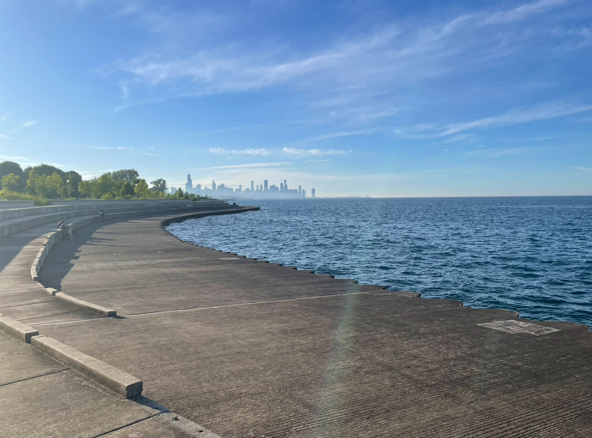
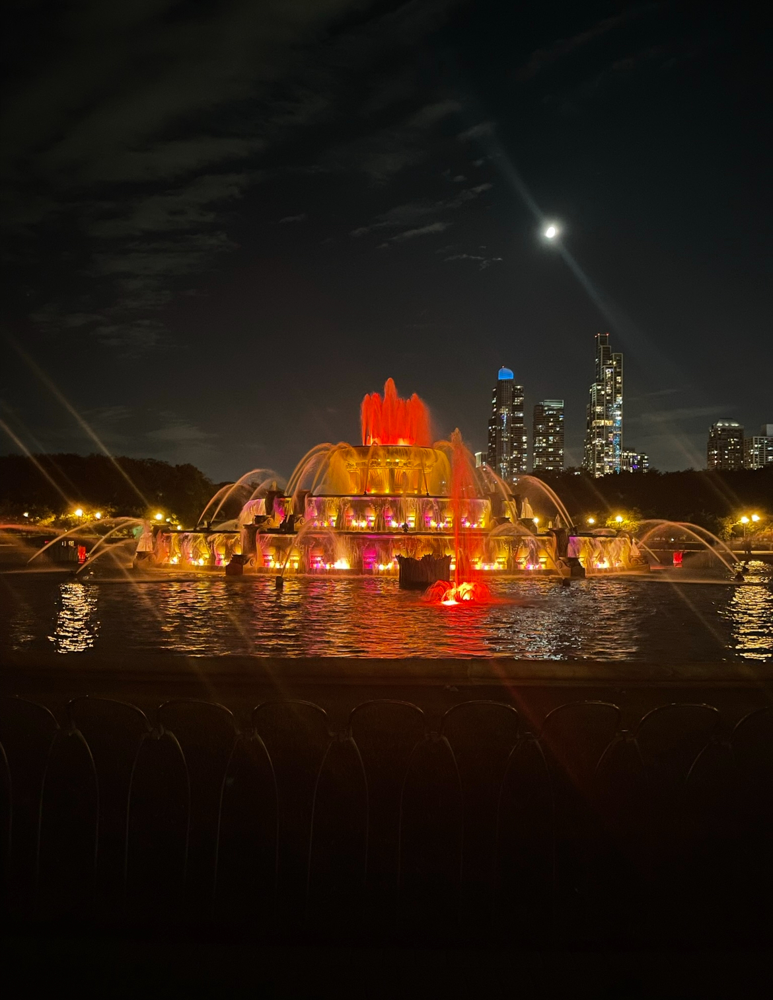
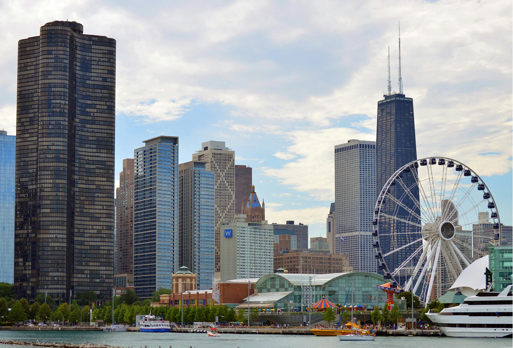

Lake Shore Drive
Chicago is a beautiful city. You can go to places to enjoy nature and take in its beauty. Sometimes you just need a nature walk to clear your head and breathe. And I the places that I mention below are some of those places: Lake Shore Drive is an expressway that starts around 65th and Jeffrey and goes downtown. Sometimes it is better to get on Lake Shore Drive to avoid lots of traffic. Along the expressway is a section that expands all the way downtown. Many ride their bikes along the pathway or take walks and enjoy the view of Lake Michigan. It’s peaceful to sit there and ponder over things.
Buckingham Fountain
This fountain is a popular tourist location. During the summer, many come to this fountain and take pictures, enjoy the breeze from the fountain, and walk around the park around it. It’s so beautiful at night and in day time. Also, it’s located downtown so you can go to the fountain and other places easily.
Navy Pier
You can see Navy Pier when you take Lake Shore Drive. The big Ferris wheel gives it away.
Something I didn’t know, is that you can take a boat from Navy Pier and look at the fireworks. Around the 4th of July, they pop fireworks at night and even sometime after, they continue to pop them. Navy Pier also has several restaurants and stores in it. It’s pretty inside and you can walk around and just relax, look at the lake, shop, ride the Ferris Wheel, and more.